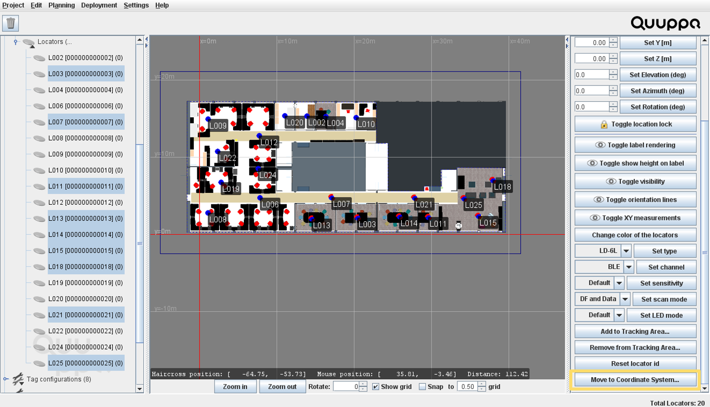
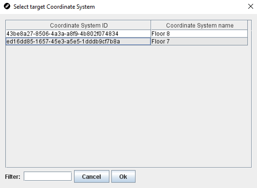

Move Locators Between Coordinate Systems
Note: Remember to enable Locators for all tracking areas that the Locators can "see"
(i.e. that are within the Locator's coverage area) in the real deployments. If
not, the Quuppa Positioning Engine (QPE) positioning calculations might be
affected. For more information on how to do this, please see the Add Locators to
Tracking Areas section.
Follow the steps below to move Locators from one coordinate system to another, follow the steps below.
Note: You can also use the Locator Table to move Locators between coordinate
systems. For more information about the Locator Table, please see the View & Edit Locator Settings
Using Locator Table section.
- Open the project in the QSP.
- In the object tree on the left, select the coordinate system that you want to move the Locators from.
- Select the Locators that you want to move, either using the object tree or the rubber band feature.
-
In the panel on the right, click the Move to Coordinate
System... button.

-
In the window that opens, select the coordinate system that you want to move
these Locators to and click the OK button.

Note: This is a good example of where it is useful to have good and descriptive names for your coordinate system. It is much easier to sort through the coordinate system names than the coordinate system ID numbers. - The selected Locators will be removed from the original coordinate systems and added to the new coordinate system.